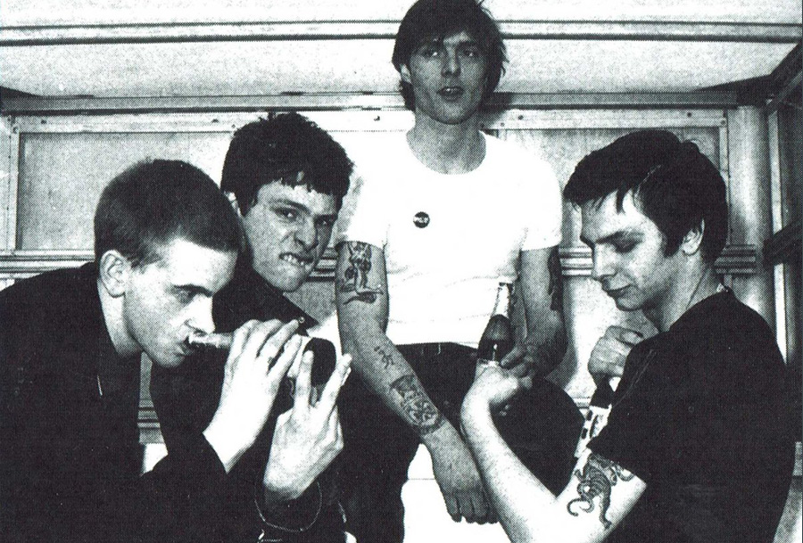
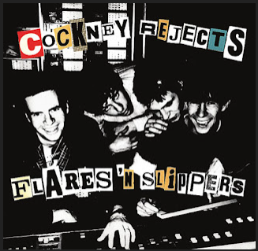
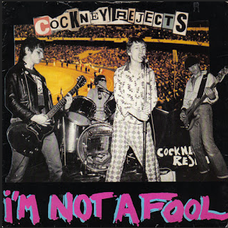
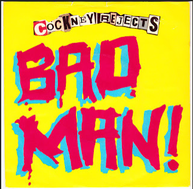
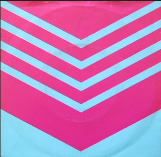
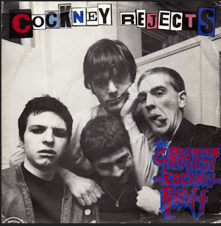

Cockney Rejects
Cockney Rejects es una banda de Punk Oi! que se formó en 1979, en el barrio de East End, en Londres. La banda provenía de clase obrera y la mayoría de sus seguidores provenían de las clases más bajas de Inglaterra. Fueron inspirados principalmente por Sham 69. La idea del formar el grupo surgió de la idea de dos hermanos, Micky y Geoff Geggus. Pronto se unió Vince Riordan. Más tarde aparecería Jimmy Pursey. El grupo congenió rápidamente, además todos tenían un nexo en común, tenían pasión por el fútbol y compartían los colores del West Ham United. Los primeros temas que grabaron ya tenían connotaciones futbolísticas, y situaron a la banda en una postura propia del movimiento hooligan. La violencia está presente en sus letras y a menudo se refleja en sus conciertos.
Discografía
1979 - Flares 'n Slippers EP

1- Flares 'N' Slippers
2- Police Car
3- I Wanna Be A Star
1979 - I'm Not A Fool 7''

1- I Am Not A Fool
2- East End
1980 - Bad Man! 7''

1- Bad Man!
2- New Song
1980 - I'm Forever Blowing Bubbles 7''

1- I'm Forever Blowing Bubbles
2- West Side Boys
1980 - The Greatest Cockney Rip-off 7''

1- The Greatest Cockney Ripoff
2- Hate Of The City
1980 - Greatest Hits Vol. 1
1- The Greatest Cockney Ripoff
2- Hate Of The City